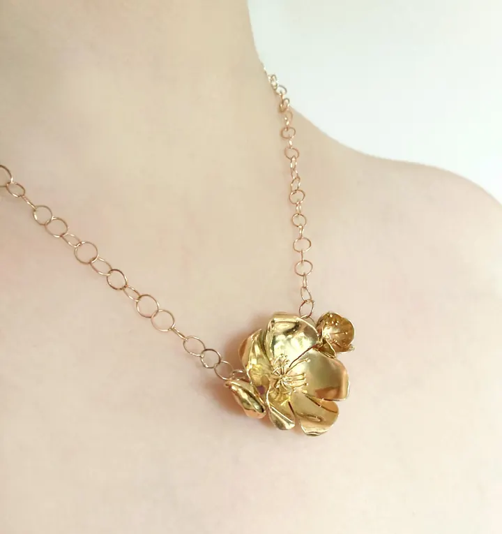
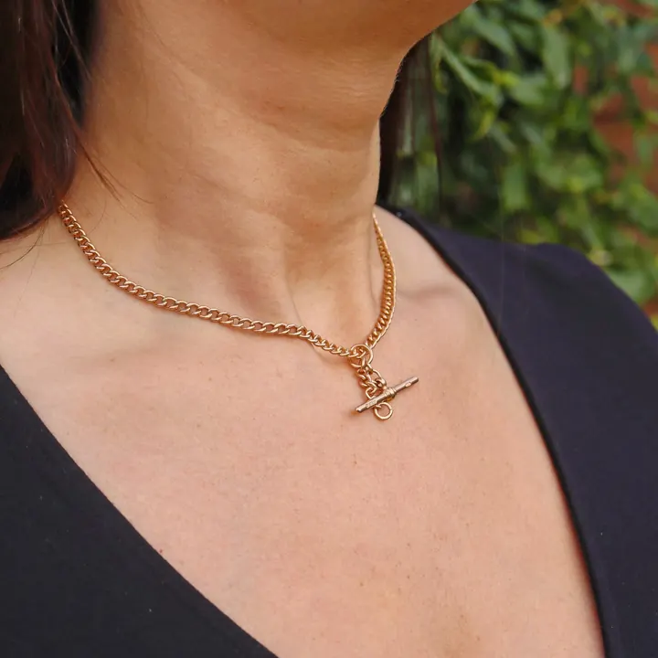

黃金總論：穿越五千年的硬通貨
黃金不腐蝕、不生鏽、不褪色——五千年來，它是文明共同的「硬通貨」。


核心定義
黃金（gold，Au）是化學元素週期表第 79 號元素——單質、金屬、幾乎不與其他物質反應（惰性）。密度 19.3 g/cm³（極重）、熔點 1064°C、延展性極佳（可錘成金箔薄至 0.1 微米）。它不氧化、不腐蝕——「永恆的金屬」。
歷史地位：黃金從古埃及到現代，一直是貨幣、權力與美的象徵——「金本位」時代它直接定義貨幣價值，如今仍是央行儲備與投資避險的核心。人類開採的黃金總量，約能裝滿兩個奧運泳池——「稀有」是它價值的根源。
特徵與分類
| 特性 | 數值/描述 | 意義 |
|---|---|---|
| 密度 | 19.3 g/cm³ | 壓手感 |
| 熔點 | 1064°C | 易加工 |
| 延展性 | 極佳 | 金箔/金絲 |
| 化學惰性 | 不氧化 | 永恆光澤 |
| 導電性 | 極佳 | 電子用途 |
黃金的「重量感」是它的身分特徵：一塊標準金條（1 公斤）體積只有手機大小，卻重達 2 公斤的飲料瓶——掂一下，就知道是不是真金。黃金的化學惰性讓它千年不變——古埃及法老的面具，今天依然閃亮。
科學原理
黃金的性質源於原子結構：電子層的相對論效應讓黃金呈金色（銀是銀白色）並高度穩定——它幾乎不與氧、酸反應（王水除外）。延展性來自金屬鍵的柔韌——1 公克黃金可拉成 3 公里金絲。
黃金的「稀有」是宇宙尺度的事實：它由超新星爆發的核合成產生——地球上的黃金都來自億萬年前的恆星死亡。地殼中的黃金濃度僅 0.004 ppm——需要開採 1 噸礦石才能提煉約 1 公克黃金。
鑑定與鑑別方法
- 掂密度：19.3 壓手感
- 看印記：K 金/足金印記
- 酸測試：硝酸不溶
- 電子密度儀精確測量
- 專業檢測：火試金/光譜
市場行情與保養建議
行情：黃金是全球流動性最強的商品——價格由國際金價（美元/盎司）決定，各國金飾在此基礎上加工費。投資管道：金條、金幣、ETF、期貨——黃金是「避險資產」，經濟動盪時價格傾向走強。
選購：金飾看「純度＋工藝費」、金條看「溢價＋回購」——投資黃金首選金條金幣（低溢價），佩戴黃金選設計（工藝費合理）。
常見誤區
純金（24K）確實軟，但可透過合金化（18K、14K 加銅銀）提高硬度——「K 金」是解決「純金太軟」的工程方案。
歷史上黃金長期對抗通膨——它不產生利息，但保值能力數千年不變。短期波動存在，長期是「價值儲存」。
冷知識
黃金的延展性是所有金屬之最——金絲細到肉眼難辨，卻不斷裂。極致柔韌的物理奇蹟。
超新星爆發的核合成產生了金——你手上的黃金，是億萬年前一顆恆星死亡的遺產。
反直覺觀點
紙幣會貶值，黃金不會——它的價值儲存屬性跨越五千年。不產生利息的資產，用「保值」說話。
人類數千年的黃金開採總量約 20 萬噸——體積小得驚人。它的「稀有」，是物理與歷史的雙重事實。